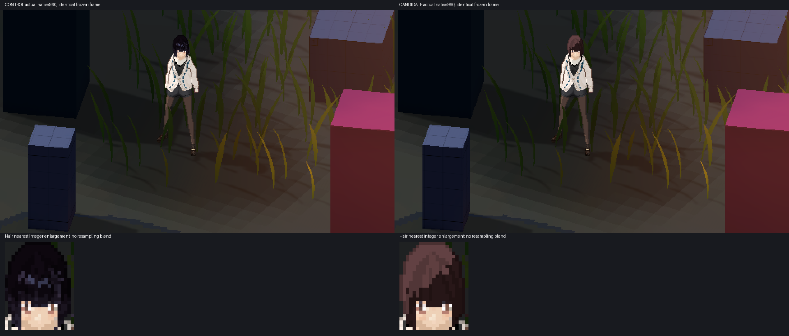
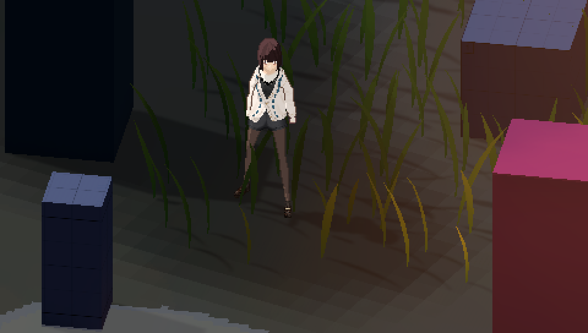
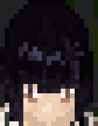
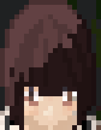
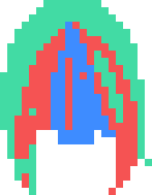
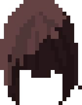

실제 Unity Play 1회 · frame94 · 고정 포즈 · 제품 기본값 미적용. 방법·한계·코드 색인 · 수치 · 복원 감사 · 좌표별 원색/g/Q/RGB




디버그 색은 source family 식별용입니다. 최종 머리색이 아닙니다. 실제 source triangle 내부373/373, 미확정0.


| 검사 | 결과 |
|---|---|
| 가시 헤어 원본 출처 | 373/373셀 |
| 초기 LUT RGB8 불일치 | 0 |
| 내부 팔레트 밖 색 | 0/263셀 · 0/1052 native픽셀 |
| 경계 팔레트 밖 색 | 52/110셀 · 208/440 native픽셀 |
| 헤어 밖 색/alpha/owner-depth 변경 | 0 |
| 시간/회전/blink/clean backing | 이번 검사 범위 밖 |
저장된 선형 float RT를 한 번 sRGB8로 인코딩한 PNG입니다. 화면 캡처나 사용자 UI 조작을 사용하지 않았습니다.